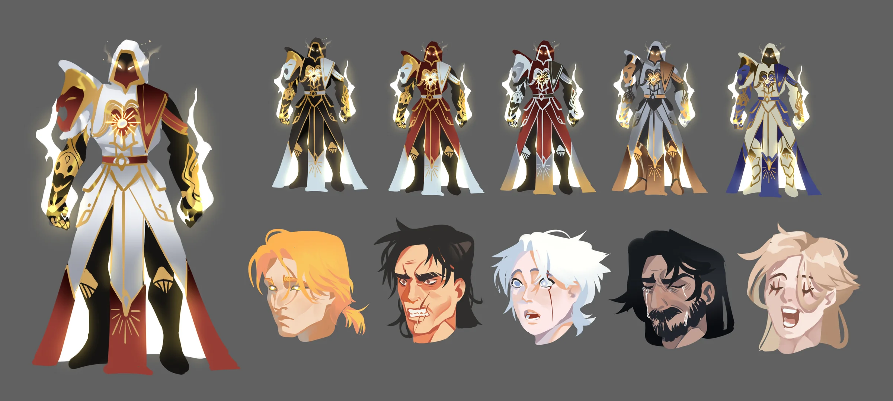
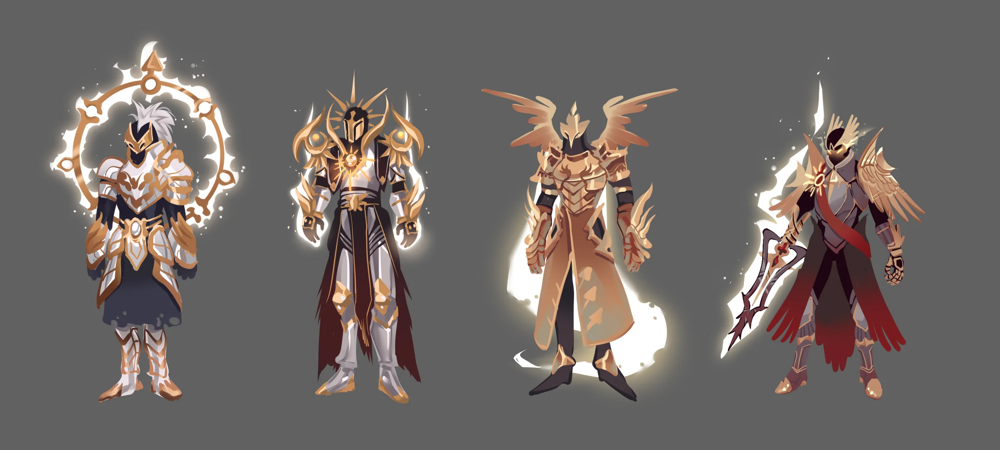
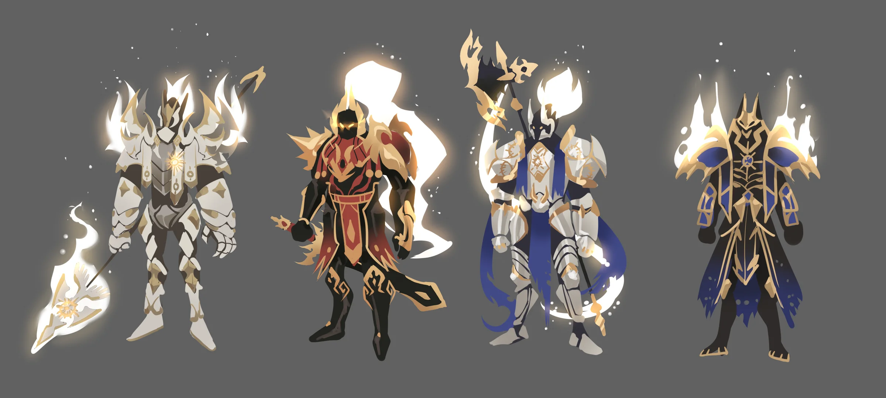
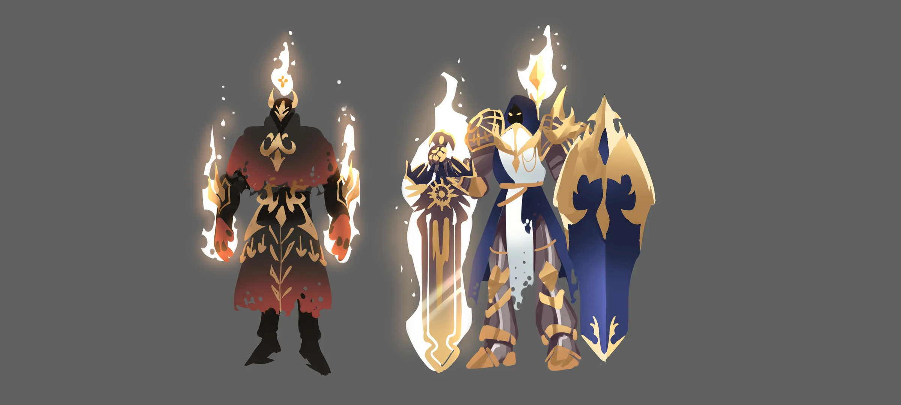
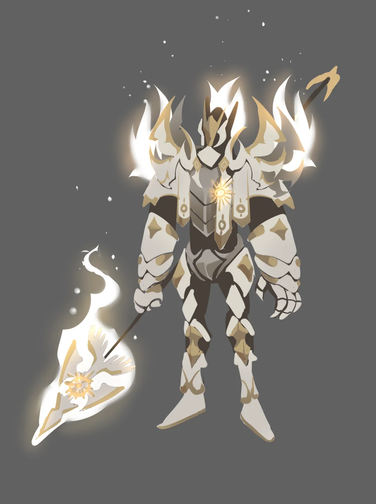
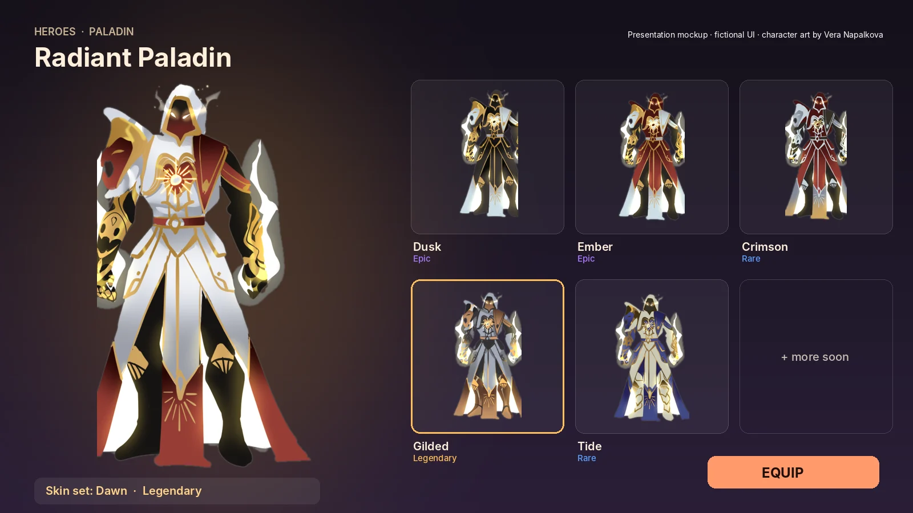
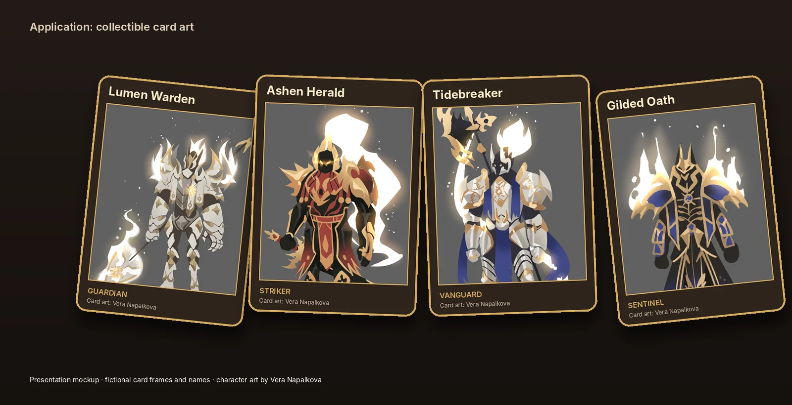

Radiant Paladin
A family of armored heroes: one paladin pushed into five skin variants, a set of knight concepts and five expression heads. How a base design scales into variants a game can sell.Семейство бронированных героев: один паладин, разведённый в пять скинов, серия концептов рыцарей и пять эмоций. Как базовый дизайн масштабируется в варианты, которые игра может продавать.
TaskЗадача
Create an armor language and multiply it without losing the hero’s identity.Создать язык брони и размножить его, не потеряв узнаваемость героя.
My partМой вклад
- Base design and 5 color/material skinsБазовый дизайн и 5 скинов по цвету и материалу
- Knight and spear-bearer conceptsКонцепты рыцарей и копейщика
- 5 expression heads5 эмоций
DecisionsРешения
- Same silhouette, new value and color blocking per skinТот же силуэт, новая раскладка тона и цвета на каждый скин
- White-gold sun motif as the family markБело-золотой солнечный мотив как знак семейства
- Glow and flame only as accentsСвечение и пламя только как акценты
ResultРезультат
Concept sheets ready to brief to 3D or to paint up as splash art.Концепт-листы, готовые для передачи в 3D или для сплэш-арта.

Five skins, one heroПять скинов, один герой
Each variant changes value structure and material read (obsidian, ember, crimson, gilded, tide) while the hood, chest sun and cape stay constant.Каждый вариант меняет тональную структуру и материал (обсидиан, угли, багрянец, золото, прилив), а капюшон, солнце на груди и плащ остаются.


The order around himОрден вокруг героя
Supporting knights share the motif but get their own weapon and silhouette.Рыцари поддержки разделяют мотив, но получают своё оружие и силуэт.


How it would shipКак это выглядит в игре
Two presentation mockups: a skin shop screen and card frames. UI, names and frames are fictional; the art is the original, only scaled and cropped.Два мокапа: экран скинов и рамки карт. Интерфейс, названия и рамки вымышлены; арт оригинальный, только масштаб и кадр.

